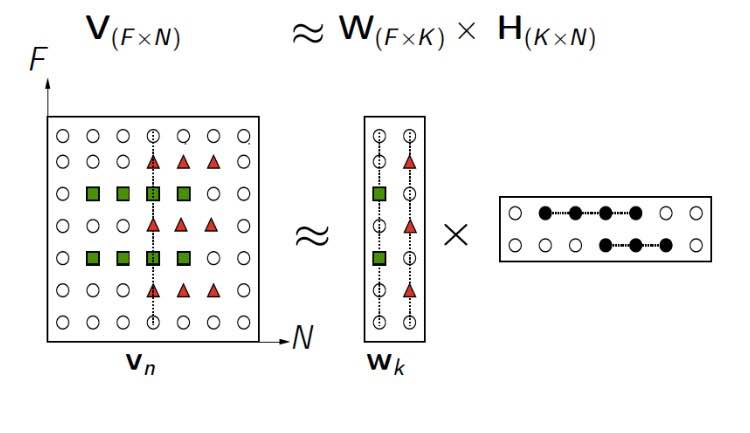
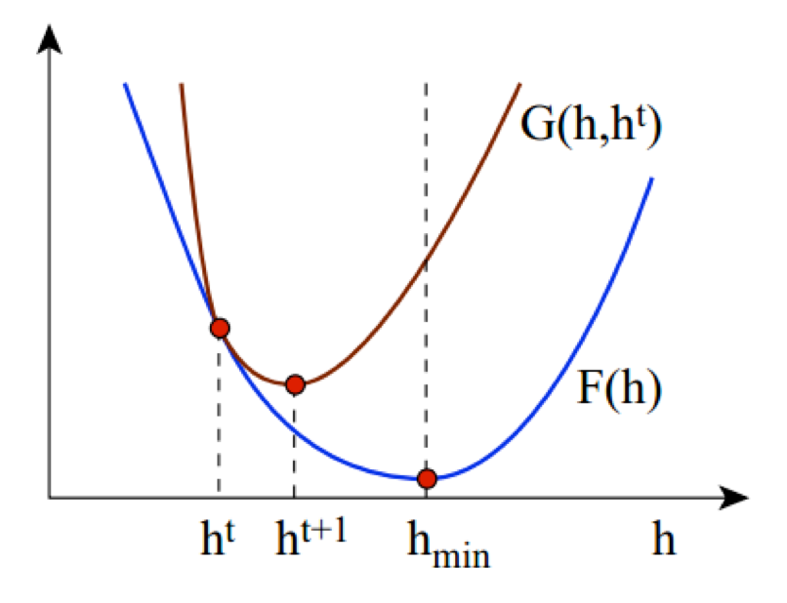

NMF是什么？
$$ V_{nm}≈W_{nr}H_{rm} $$
$$ v_{n1}≈W_{nr}h_{r1} $$
找出原数据的latent，压缩数据。将原来需要n维来表示的数据用r维的线性组合来表示。

该文成果
提出两种算法，
并证明更新规则是单调的，从而算法可以收敛到局部最优。
Cost Function
$$ ||A-B||^2=\sum_{ij}(A_{ij}-B_{ij})^2 $$
Problem1：最小化 $$||V-WH||^2 $$ ，where $$W,H>0$$
$$D(A||B)=\sum_{ij}(A_{ij}log\frac{A_{ij}}{B_{ij}})-A_{ij}+B_{ij}$$
Problem2：最小化 $$D(V||WH) $$ ，where $$W,H>0$$
两个方程针对单个W或者H都是凸的，但是同时的话不是凸的。所以只能找到局部最优，而非全局最优。
现有方法：
- gradient descent：太慢
- conjugate gradient：more complicated than gradient descent
- 基于梯度的方法：对于step的选择比较敏感，对于大型应用不方便
Updated rules
欧氏距离
$$H_{a\mu}\leftarrow H_{a\mu}\frac{(W^TV){a\mu}}{(W^TWH){a\mu}}$$
$$W_{ia}\leftarrow W_{ia}\frac{(VH^T){ia}}{(WHH^T){ia}} $$
Divergence
$$ H_{a\mu} \leftarrow H_{a\mu}\frac{\sum_iW_{ia}V_{i\mu}/(WH){i\mu}}{\sum_kW{ka}}$$
$$ W_{ia} \leftarrow W_{ia}\frac{\sum_{\mu}H_{a\mu}V_{i\mu}/(WH){i\mu}}{\sum_vH{av}}$$
Proof of Convergence
定义1
$$ G(h,h’)\geq F(h), G(h, h)=F(h) $$
则$$G(h,h’)$$是$$F(h)$$的辅助函数，当满足上面条件时。

引理1
根据定义1，有$$F(h^{t+1}) \leq G(h^{t+1}, h^t) \leq G(h^t, h^t) = F(h)$$
$$ h^{t+1} = \arg\min_hG(h,h^t) $$
不断迭代上式，可以得出局部最优，$$h_{min} = \arg \min_h F(h)$$
引理2
定义对角阵$$K(h^t)$$
$$ K_{ab}(h^t)=\frac{\delta_ab(W^TWh^t)_a}{h_a^t} $$
定义
$$ G(h, h^t) = F(h^t) + (h-h^t)^T\nabla{F(h^t)} + \frac12 (h-h^t)^TK(h^t) (h-h^t) $$
如果证明$$G(h, h^t)$$是$$F(h)$$辅助函数，就可以得出欧式距离局部收敛了。
$$ F(h)=\frac12\sum_i(v_i-\sum_aW_{ia}h_a)^2 $$
$$F(h)$$在$$h^t$$附近的二阶泰勒展开
$$ F(h)=F(h^t) + (h-h^t)^T\nabla{F(h^t)} + \frac12 (h-h^t)^T\nabla^2F(h^t) (h-h^t) $$
其中
$$ \nabla{F(h^t)}=\sum_i{(v_i-\sum_{a}{W_{ia}h_a^t})(-W_{ia})} $$
$$ \nabla^2F(h^t)= \nabla(\nabla{F(h^t)})=\sum_{ia}(W^T){ai}h_a^tW{ia}=W^TW$$
半正定性证明
显然，$$G (h, h)=F(h) $$
那么$$G(h, h^t) \geq F(h)$$ 等价于下式
$$0 \leq (h-h^t)^TK(h^t)-W^TW$$
等价于证明下面矩阵的半正定性
$$M_{ab}(h^t)=h_a^t(K(h^t)-W^TW)_{ab}h_b^t$$
对于下式
$$ v^TMv=\sum_{ab}v_aM_{ab}v_b $$
$$ = \sum_{ab}v_ah_a^tK(h^t)h_b^tv_b-v_ah_a^t(W^TW)_{ab}h_b^tv_b$$
其中
$$ \delta_{ab}=\begin{cases}1, &a=b \cr 0, &a\not=b\end{cases}$$
$$ \sum_{ab}v_ah_a^tK(h^t)h_b^tv_b=\sum_{ab}v_ah_a^t\delta_{ab}(W^TWh^t)a/h_a^t*h_b^tv_b $$
因为$$\delta{ab}$$是对角阵，所以可以得出$$v_a=v_b$$
即：
$$\sum_{ab}v_ah_a^tK(h^t)h_b^tv_b=\sum_{ab}(h_a^t)^2(W^TW){ab}/h_a^t*h_b^tv_a^2$$
$$=\sum{ab}h_a^t(W^TW)_{ab}h_b^t(\frac12v_a^2+\frac12v_b^2)$$
所以：
$$ v^TMv=\sum_{ab}h_a^t(W^TW){ab}h_b^t(\frac12v_a^2+\frac12v_b^2-v_av_b) $$
$$ =\frac12\sum{ab}h_a^t(W^TW)_{ab}h_b^t(v_a-v_b)^2 $$
$$ \geq 0$$
证明定理1——欧式距离Cost Function的收敛：
上述式子已经证明$$G(h,h^t)$$是$$F(h^t)$$的辅助函数
$$ G(h, h^t)=F(h^t)+(h-h^t)\nabla{F(h^t)}+\frac12(h-h^t)^TK(h^t)(h-h^t) $$
令$$\nabla{G(h, h^t)}=0$$
$$ \nabla{F(h^t)}+K(h^t)(h-h^t)=0$$
得递推式
$$ h^{t+1}=h^t-K(h^t)^{-1}\nabla{F(h^t)} $$
$$h^{t+1} = h^t-\frac{h_a^t}{\delta_{ab}(W^TWh^t)a}\sum_i{(v_i-\sum{a}{W_{ia}h_a})(-W_{ia})} $$
$$ = h^t - \frac{h_a^t}{\delta_{ab}(W^TWh^t)a}(\sum{ia}(W^T){ai}h_aW{ia} - \sum_iv_iW_{ia})$$
最后得到欧式距离的$$H$$的update rules，同理可得到$$W$$的update rules。
$$ h_a^{t+1} = h_a^t\frac{(W^Tv)_a}{(W^TWh^t)_a}$$
引理2
和前面一样，如果证明$$G(h, h^t)$$是$$F(h)$$辅助函数，就可以得出Divergence下局部收敛了
$$ G(h, h^t) = \sum_i(v_ilogv_i-v_i)+\sum_{ia}W_{ia}h_a-
\sum_{ia}v_i\frac{W_{ia}h_a^t}{\sum_bW_{ib}h_b^t}(logW_{ia}h_a-log\frac{W_{ia}h_a^t}{\sum_bW_{ib}h_b^t}) $$
$$ F(h) = \sum_{i}v_{i}log(\frac{v_i}{\sum_a{W_{ia}h_a}})-v_i+\sum_aW_{ia}h_a $$
这里$$ G(h, h) = F(h) $$如下
$$ G(h, h) = \sum_i(v_{i}logv_i-v_i)+\sum_{ia}W_{ia}h_a-
\sum_{ia}v_i\frac{W_{ia}h_a}{\sum_bW_{ib}h_b}(logW_{ia}h_a-log\frac{W_{ia}h_a}{\sum_bW_{ib}h_b}) $$
$$ = \sum_i(v_ilogv_i-v_i)+\sum_{ia}W_{ia}h_a-
\sum_{ia}v_i\frac{W_{ia}h_a}{\sum_bW_{ib}h_b}(log{\sum_bW_{ib}h_b}) $$
$$= \sum_i(v_ilogv_i-v_i)+\sum_{ia}W_{ia}h_a-
\sum_{i}v_i\frac{\sum_aW_{ia}h_a}{\sum_bW_{ib}h_b}(log{\sum_bW_{ib}h_b})$$
$$ = \sum_{i}v_{i}log(\frac{v_i}{\sum_b{W_{ib}h_b}})-v_i+\sum_aW_{ia}h_a = F(h)$$
由加权形式的Jessen不等式可得
$$-log\sum_aW_{ia}h_a \leq -\sum_a\alpha_alog\frac{W_{ia}h_a}{\alpha_a}$$
其中，
$$\sum_a\alpha_a=1$$
令
$$ \alpha_a=\frac{W_{ia}h_a^t}{\sum_bW_{ib}h_b^t} $$
得出
$$ -log\sum_aW_{ia}h_a \leq -\sum_a\frac{W_{ia}h_a^t}{\sum_bW_{ib}h_b^t}(logW_{ia}h_a-log\frac{W_{ia}h_a^t}{\sum_bW_{ib}h_b^t}) $$
即$$F(h) \leq G(h, h^t)$$
证明定理2——‘Divergence’的Cost Function的收敛：
令$$\frac{d{G(h, h^t)}}{dh_a}=0$$
得
$$ -\sum_iv_i\frac{W_{ia}h_a^t}{\sum_bW_{ib}h_b^t}\frac{1}{h_a} + \sum_iW_{ia} = 0$$
从而得到$$H$$的递推式，同理也可得$$W$$的递推式
$$h_a^{t+1}=\frac{h_a^t}{\sum_bW_{kb}}\sum_i\frac{v_i}{\sum_bW_{ib}h_b^t}W_{ia}$$